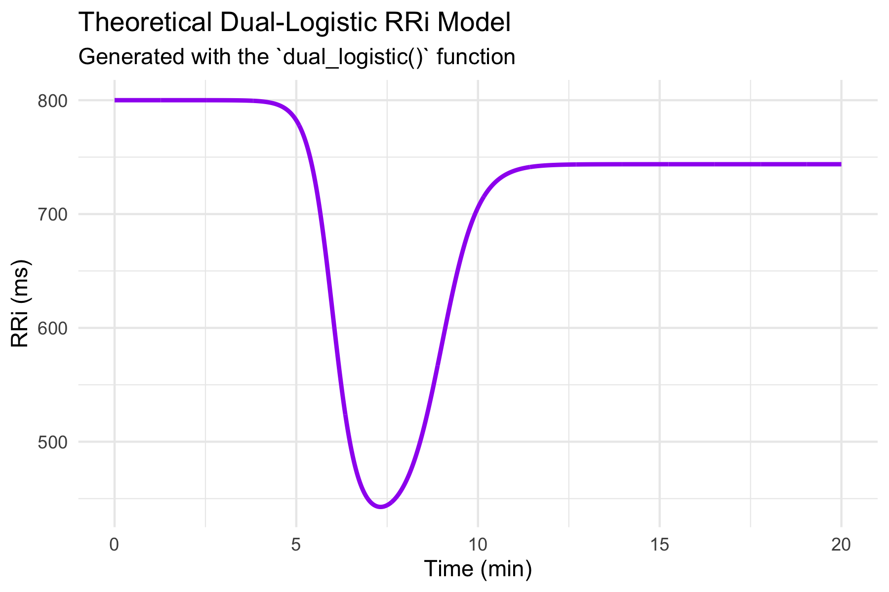
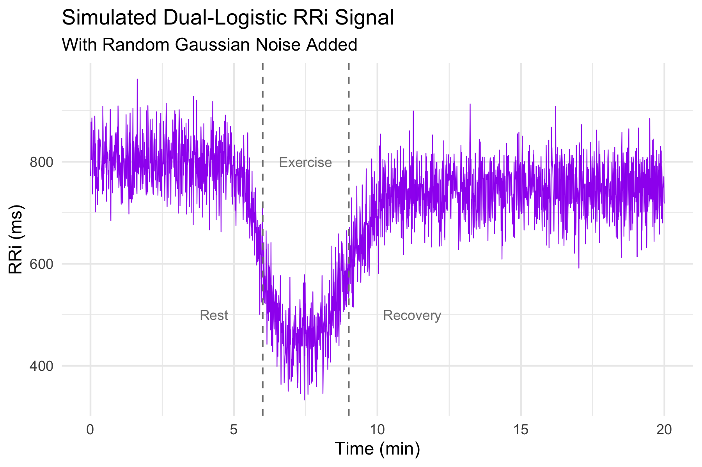
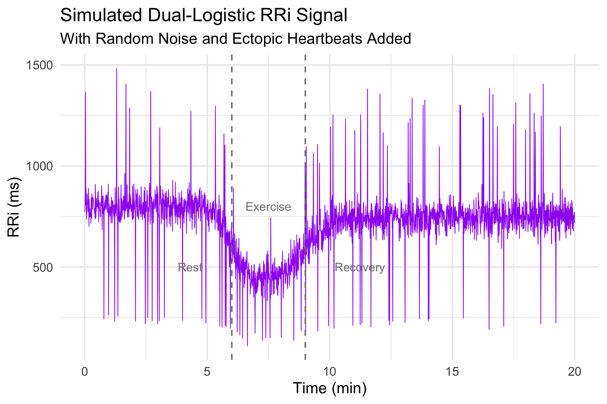
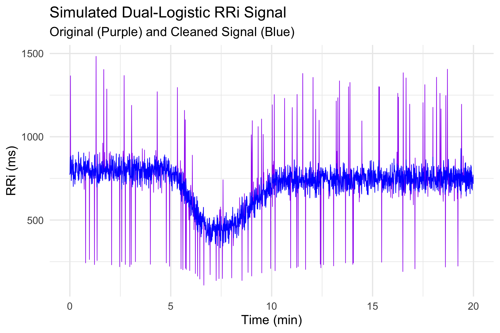
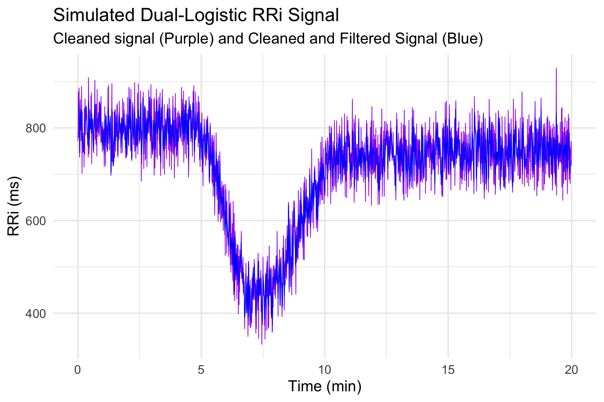
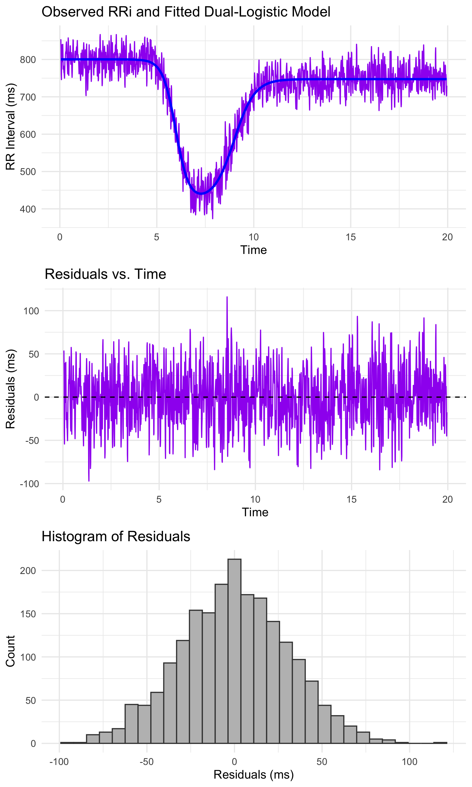
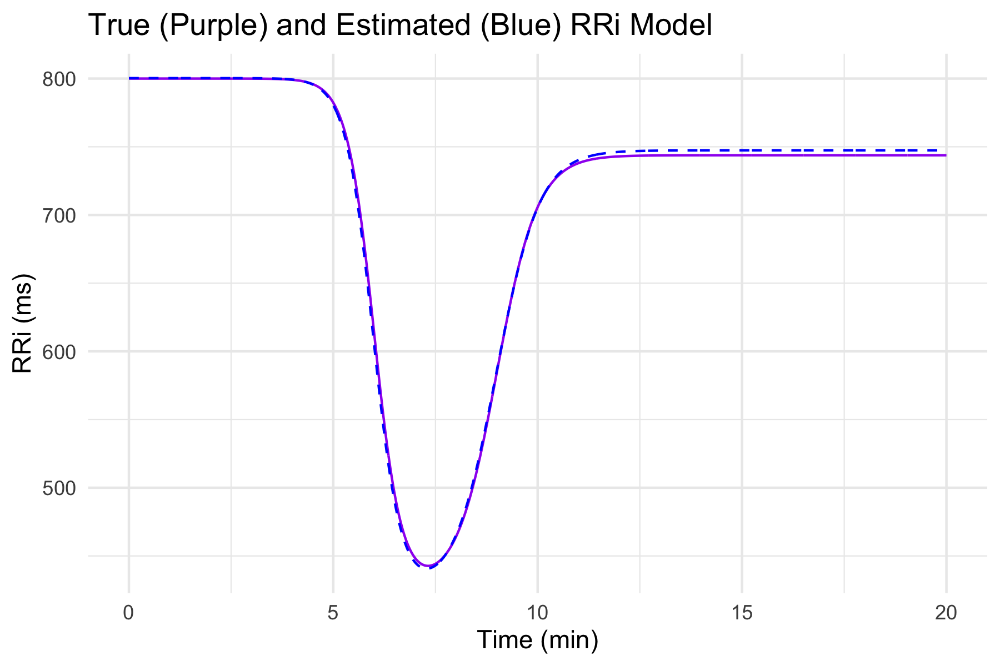

CardioCurveR provides an automated and robust framework for modeling RR interval (RRi) signals. The package is built around a dual-logistic model, as described by Castillo-Aguilar et al. (2025), which captures both the rapid drop in RRi during exercise and the subsequent recovery phase. In our formulation, the model is defined by the following equation:
where represents the baseline RRi level, controls the amplitude of the drop, modulates the steepness of the drop phase, is the time center of the drop, scales the recovery amplitude relative to , controls the steepness of the recovery phase, and shifts the recovery phase in time relative to the drop.
CardioCurveR also incorporates advanced signal filtering techniques using a zero-phase Butterworth filter to preprocess the RRi data and remove edge artifacts. This ensures that the dynamic fluctuations are preserved for subsequent non-linear modeling.
Installation
To install the development version of CardioCurveR, run the following commands in R. Make sure that you have the devtools package installed:
if (!requireNamespace("devtools", quietly = TRUE)) {
install.packages("devtools")
}
devtools::install_github("matcasti/CardioCurveR")Core Functions
The package provides several key functions:
Dual-Logistic Model: dual_logistic()
This function implements the dual-logistic model from Castillo-Aguilar et al. (2025):
It takes a vector of time points and a named vector (or list) of parameters, returning the modeled RRi values.
Parameter Estimation: estimate_RRi_curve()
This function optimizes the dual-logistic model parameters using a robust Huber loss function. The optimization is performed via the optim() function with box constraints (default method "L-BFGS-B"). It is designed to yield reliable parameter estimates even in the presence of noisy data.
Signal Filtering: filter_signal()
This function applies a Butterworth low-pass filter using zero-phase filtering (with filtfilt()) to clean the RRi signal. To mitigate edge effects from filtering, it trims a specified number of samples from the beginning and end of the filtered signal.
Adaptive Outlier Cleaning: clean_outlier()
The clean_outlier() function removes ectopic or noisy beats from an RRi signal. It fits a LOESS model to capture local trends, calculates residuals, and flags outliers based on a robust threshold (multiples of the median absolute deviation). Outliers are then replaced by one of three methods: drawing from a Gaussian or uniform distribution, or simply replacing with the LOESS-predicted values.
Example Workflow
Generating real-life data
Below is an extended example that demonstrates the full workflow of simulating, filtering, visualizing, and fitting an RRi signal model.
First we load the package CardioCurveR, assuming that you first installed it.
Then, we simulate data with specific parameters from the dual-logistic model described in Castillo-Aguilar et al. (2025).
# Simulate a time vector and a theoretical RRi signal using the dual-logistic model.
time_vec <- seq(0, 20, by = 0.01)
# Define the true model parameters from Castillo-Aguilar et al. (2025)
true_params <- list(alpha = 800, beta = -375, c = 0.85,
lambda = -3, phi = -2,
tau = 6, delta = 3)
# Compute the theoretical RRi curve using dual_logistic()
RRi_theoretical <- dual_logistic(time_vec, true_params)
# Arrange the generated data and time vector in a single table
simulated_data <- data.frame(time = time_vec,
RRi_theoretical = RRi_theoretical)And our simulated data will look something like this:
#> time RRi_theoretical
#> 1 0 799.999999143314
#> 2 0.01 799.999999067449
#> 3 0.02 799.999998988268
#> ... ... ...
#> 1999 19.98 743.749999907457
#> 2000 19.99 743.74999990929
#> 2001 20 743.749999911086We can visualize the generated theoretical curve generated with the dual_logistic() function by leveraging ggplot2 grammar of graphics like this:
library(ggplot2) ## Load ggplot2 package
# Visualize the theoretical model
ggplot(simulated_data, aes(time, RRi_theoretical)) +
geom_line(linewidth = 1, col = "purple") +
labs(title = "Theoretical Dual-Logistic RRi Model",
subtitle = "Generated with the `dual_logistic()` function",
x = "Time (min)", y = "RRi (ms)") +
theme_minimal()
We can additionally generate random noise around our theoretical curve to simulate a real R-R interval signal (because life, has randomness in it):
set.seed(123) # Seed for reproducibility
# Simulate a noisy RRi signal by adding Gaussian noise
simulated_data <- within(simulated_data, {
RRi_simulated <- RRi_theoretical + rnorm(length(time), sd = 50)
})So now, we added noise to our perfectly smooth signal, let’s see how does it look now:
ggplot(simulated_data, aes(time, RRi_simulated)) +
geom_line(linewidth = 1/4, col = "purple") +
geom_vline(xintercept = c(6,9), linetype = 2, col = "gray50") +
annotate("text", x = 5.0-0.2, y = 500, label = "Rest", col = "gray50",
hjust = 1, cex = 3) +
annotate("text", x = 7.5, y = 800, label = "Exercise", col = "gray50",
hjust = 0.5, cex = 3) +
annotate("text", x = 10+0.2, y = 500, label = "Recovery", col = "gray50",
hjust = 0, cex = 3) +
labs(title = "Simulated Dual-Logistic RRi Signal",
subtitle = "With Random Gaussian Noise Added",
x = "Time (min)", y = "RRi (ms)") +
theme_minimal()
So as we see, our model also works to generate and simulate data with noise included, which will serve our purpose to illustrate how we can reverse-engineer the noisy RRi signal back to our theoretical curve.
Let’s first add some ectopic signals to make it look even more real:
set.seed(1234) ## Seed for reproducibility
## Total number of RRi records or points
n_samples <- nrow(simulated_data)
## We'll select random points (5% of whole signal)
ectopics <- sample.int(n = n_samples, size = floor(n_samples * 0.05))
## We'll add a doubled or half value to selected ectopic data points
simulated_data <- within(simulated_data, {
RRi_simulated[ectopics] <- RRi_simulated[ectopics] * c(0.3, 1.7)
})Now let’s look how looks our noisy, unprocessed signal:
ggplot(simulated_data, aes(time, RRi_simulated)) +
geom_line(linewidth = 1/4, col = "purple") +
geom_vline(xintercept = c(6,9), linetype = 2, col = "gray50") +
annotate("text", x = 5.0-0.2, y = 500, label = "Rest", col = "gray50",
hjust = 1, cex = 3) +
annotate("text", x = 7.5, y = 800, label = "Exercise", col = "gray50",
hjust = 0.5, cex = 3) +
annotate("text", x = 10+0.2, y = 500, label = "Recovery", col = "gray50",
hjust = 0, cex = 3) +
labs(title = "Simulated Dual-Logistic RRi Signal",
subtitle = "With Random Noise and Ectopic Heartbeats Added",
x = "Time (min)", y = "RRi (ms)") +
theme_minimal()
Okay so now this look like real-life signal data. Now the question lies: Can we reverse-engineer this curve back to our nice and smooth theoretical curve? That’s exactly the goal to this package. Let’s see what can we do!
Cleaning the RRi data
First, we need to remove ectopic signals. We can do this with our clean_outlier() function like this:
## First we call our function
cleaned_data <- with(simulated_data, clean_outlier(time, RRi_simulated))
## And them, add the cleaned signal to our original table as another column
simulated_data$RRi_cleaned <- cleaned_data$signalSo now, let’s check how it looks our cleaned signal (without ectopic hearbeats):
ggplot(simulated_data, aes(x = time)) +
geom_line(aes(y = RRi_simulated), linewidth = 1/4, col = "purple") +
geom_line(aes(y = RRi_cleaned), linewidth = 1/4, col = "blue") +
labs(title = "Simulated Dual-Logistic RRi Signal",
subtitle = "Original (Purple) and Cleaned Signal (Blue)",
x = "Time (min)", y = "RRi (ms)") +
theme_minimal()
Additionally, we can now filter the noise we add initially (the random gaussian noise) to clean even more our RRi signal. Let’s see how it looks our RRi signal after filtering:
# Apply the Butterworth low-pass filter to the noisy RRi signal
simulated_data$RRi_filtered <- with(simulated_data, filter_signal(RRi_cleaned))
ggplot(simulated_data, aes(x = time)) +
geom_line(aes(y = RRi_cleaned), linewidth = 1/4, col = "purple") +
geom_line(aes(y = RRi_filtered), linewidth = 1/4, col = "blue", na.rm = TRUE) +
labs(title = "Simulated Dual-Logistic RRi Signal",
subtitle = "Cleaned signal (Purple) and Cleaned and Filtered Signal (Blue)",
x = "Time (min)", y = "RRi (ms)") +
theme_minimal()
With this filtered signal we can now focus on capturing the true underlying theoretical curve rather than just capturing the noise from the measurements.
Estimating the RRi model
The estimation process of the original curve is rather simple: we call the function estimate_RRi_curve() and plug the time and RRi vectors inside.
# Estimate the dual-logistic model parameters from the noisy RRi signal
fit_summary <- with(simulated_data, estimate_RRi_curve(time, RRi_filtered))
## Lets print the results of the estimation of our model parameters
print(fit_summary)
#> RRi_fit Object
#> Optimization Method: L-BFGS-B
#> Estimated Parameters:
#> alpha beta c lambda phi tau
#> 800.3187317 -379.8993874 0.8606058 -2.9594002 -1.8927805 5.9759377
#> delta
#> 3.0115352
#> Objective Value (Huber loss): 921733.7
#> Convergence Code: 0And as simple as that we have fitted the dual logistic model to our processed data. Let’s explore how well our model captured the pattern from the generated data. We can further use other base functions to explore the resulting object.
For instance, let’s call the summary() function to our object:
## Now lets see a summary with model fit statistics
summary(fit_summary)
#> Summary of RRi_fit Object
#> Optimization Method: L-BFGS-B
#> Estimated Parameters:
#> alpha beta c lambda phi tau
#> 800.3187317 -379.8993874 0.8606058 -2.9594002 -1.8927805 5.9759377
#> delta
#> 3.0115352
#>
#> Objective Value (Huber loss): 921733.7
#> Residual Sum of Squares (RSS): 1902518
#> Total Sum of Squares (TSS): 23025287
#> R-squared: 0.9174
#> Root Mean Squared Error (RMSE): 30.9 ms
#> Mean Absolute Percentage Error (MAPE): 3.6 %
#> Number of observations: 1991
#> Convergence Code: 0We can see that the model have an R-squared of 0.917, which means that is explaining about 91.7% of the variance contained in the generated RRi signal (considering that we start with really messy and noisy RRi data). The RMSE indicates that the average error of the model is only about 30 ms, which is equivalent to an error of 3.6 % according to the MAPE.
We can see plot model diagnostics using the plot() function. Let’s see the result:
## Finally, lets see a plot with diagnostics statistics
plot(fit_summary)
The above plot should show the predicted RRi line (blue) closely following the RRi signal. The middle plot should show that the residuals of the model are evenly spread around the zero line. This is further observed by the histogram of residuals which should be normally distribuited around zero.
Let’s see how well our model did compared to the true underlying curve that we used to generate the data!
## Add the simulated curve from the estimated parameters
simulated_data$RRi_estimated <- dual_logistic(time_vec, fit_summary$parameters)
ggplot(simulated_data, aes(time)) +
geom_line(aes(y = RRi_theoretical), linewidth = 1/2, col = "purple", linetype = 1) +
geom_line(aes(y = RRi_estimated), linewidth = 1/2, col = "blue", linetype = 2) +
labs(title = "True (Purple) and Estimated (Blue) RRi Model",
y = "RRi (ms)", x = "Time (min)") +
theme_minimal()
We can see that our model did a fairly well job capturing the underlying true curve, which demonstrate our model’s capabilities in capturing the RRi dynamics in response to exercise when this double-logistic behavior is inherently present.
The above example demonstrates multiple steps. First, a theoretical RRi signal is computed from the dual-logistic model. Next, a noisy version of the signal is simulated and then cleaned using a Butterworth low-pass filter. The cleaned signal is used to estimate the dual-logistic model parameters through a robust optimization procedure. Visualizations are provided for the theoretical curve, the noisy versus filtered signals, the fitted model overlay, and the residuals of the fit, offering comprehensive insight into each stage of the process.
Enjoy exploring your RR interval dynamics and modeling them robustly with CardioCurveR!